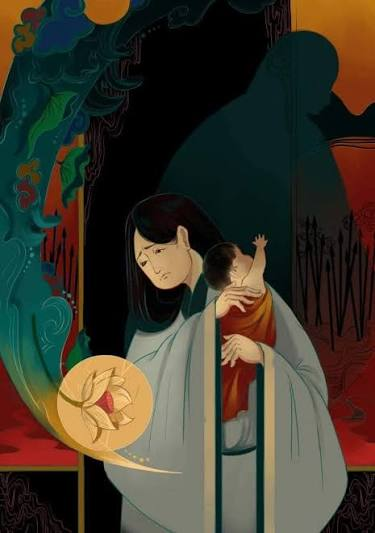

Chủ đề
Qua câu chuyện về cuộc đời và cái chết thương tâm của Vũ Nương, “Chuyện người con gái Nam Xương” thể hiện niềm thương cảm đối với số phận oan nghiệt, đồng thời ca ngợi vẻ đẹp truyền thống của những phụ nữ Việt Nam dưới chế độ phong kiến.
Ý nghĩa
“Chuyện người con gái Nam Xương” thể hiện niềm thương cảm sâu sắc trước số phận bất hạnh của người phụ nữ trong xã hội phong kiến, đồng thời ca ngợi những phẩm chất tốt đẹp như thủy chung, hiếu thảo và giàu tình yêu thương của Vũ Nương.
Qua bi kịch của nàng, Nguyễn Dữ phê phán chế độ gia trưởng, những định kiến khắc nghiệt và sự thiếu thấu hiểu đã đẩy con người vào cảnh oan khuất. Tác phẩm cũng thể hiện khát vọng về một cuộc sống công bằng, nơi con người được tôn trọng và có quyền được sống hạnh phúc.
